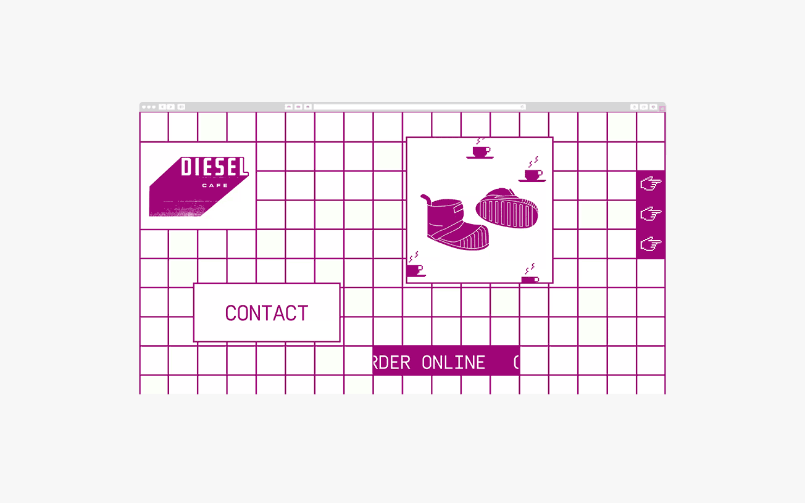
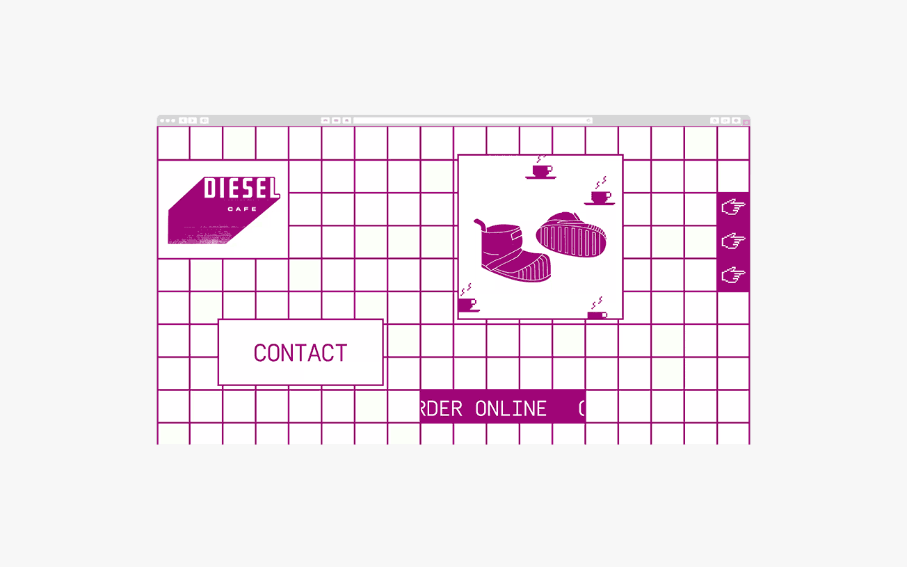

Digital design, branding, and animation for local cafe. Created under CD Jeennifer Lucy-Brzoza.
Art directed a series of product shots for the studio's stationery line.
Created under CD Jennifer Lucy-Brzoza.
Branding and storefront design as well as menus and other branded matter for the new Island Creek Oyster Portland store.
Created under CD Jennifer Lucy-Brzoza.
Digital design, packaging, front-end dev, and art direction for a local cafe.
Created under CD Jennifer Lucy-Brzoza.
Posters
Apparel
Event branding, posters, and apparel for a competition held by MIT. Created under CD Jennifer Lucy-Brzoza.
 
